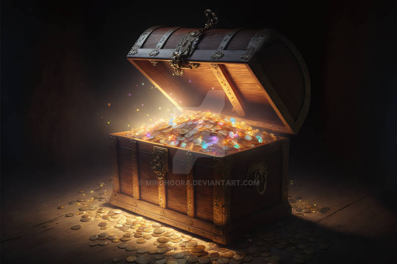

Você está no chão atordoado(a) com o relâmpago que recebeu.
O mago se aproxima de você mencionando palavras incompreensíveis e você sente suas mãos e pés como se pesassem toneladas!
“-Eu o paralisei, mas não fique preocupado, logo você se juntará ao seu dragão!”
Mesmo lutando com todas suas forças você não consegue se mover!
Nesse momento o mago cria uma chama em sua mão, uma chama que cresce cada vez mais e toma a forma de uma esfera. Uma bola de fogo!
Você fecha os olhos e espera. O calor só aumenta até que um estrondo terrível de vidraças sendo quebradas ecoa pelo salão e um frio incompreensível invade o ambiente.
Quando você abre os olhos vê à sua frente uma estátua macabra de gelo, que não é ninguém menos que o Grão-Mago.
Sentindo uma onda de frio você se vira e vê Gwyn, vivo, ao lado de uma imensa abertura na parede.
“-Agora me deve uma humano(a)!”
Com um sorriso você se levanta e se aproxima do desgraçado congelado.
Com um único golpe de espada o reduz a pedaços e pega o Cristal da Guerra, que brilha em uma luz escarlate.
Dias depois vocês estão na cidade capital de Planesverde para uma audiência com o Rei.
Já no castelo Gwyn o espera do lado de fora enquanto você entra.
Você é guardado(a) e é recebido(a) com todas as honras.
Os habitantes do castelo comemoram o seu regresso e você é imediatamente levado à presença do Rei que fica muito satisfeito com o seu regresso.
Ele reitera que a sua recompensa será enorme e exige a entrega do Cristal da Guerra.
“Majestade. A missão foi cumprida. O cristal foi recuperado, mas...”
Nesse instante você puxa do bolso um pequeno saco e derrama no chão um punhado de cristais partidos.
“Não consegui recuperá-lo intacto, mas é ainda melhor do que se estivesse com vossos inimigos.”
Toda a sala do trono se mantém em silêncio enquanto o rei finta os cacos de cristal vermelho.
Depois de alguns segundos ele deixa a sala do trono, claramente contrariado.
Você permanece ali, em pé e em silêncio por muitos minutos.
Por fim um conselheiro do Rei surge, se aproxima e lhe entrega uma chave.
Com isso você se retira e ao chegar ao pátio uma grande carroça o aguarda com um baú cheio de ouro e pedras preciosas.

Após dividir a recompensa com Gwyn você paga todas as suas dívidas e ainda se torna um(a) aventureiro(a) muito rico(a).
Claro, isso sem citar o fato que o verdadeiro Cristal da Guerra está com você!
Pouco antes de deixar a sala do derradeiro confronto seu aliado draconiano contou que os cacos de cristal mágico no chão seriam indistinguíveis do cristal de verdade, caso fosse quebrado.
Com isso vocês dois continuam amigos, unidos e agora muito ricos.
Muito tempo se passou com ambos tentando desvendar o poder do cristal, até que um dia vocês recebem a visita de uma velha.
Ela trás segredos fascinantes e notícias preocupantes. Uma nova aventura sem precedentes começa...
FIM - SUCESSO